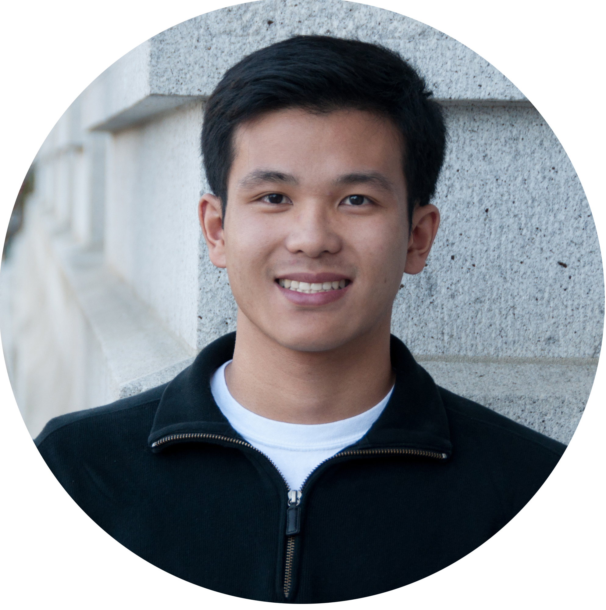

Hi! Thank you for visiting and welcome to my website! I am currently a senior attending the University of California, Berkeley majoring in Molecular and Cell Biology. My goal is to study and practice medicine with an emphasis on thorough and compassionate care.
As a student of UC Berkeley, I am involved in a variety of extracurricular activities on campus that I am passionate about.
An organization I am a part of is the Associated Students of the University of California (ASUC) which is the largest and most autonomous student association in the country. In August 2016, I served as the Director of Accountability. Our office strives to hold all elected and appointed officials accountable for their actions, platforms, and duties to the student body. We work closely with the Chief Legal Officer/Attorney General and the Judicial Council to maintain and enforce internal accountability within the ASUC and the student body. Our office also spearheads the ASUC Transparency Initiative Project by providing public access to ASUC official documents which include financial records, performance reviews, ASUC archives, and weekly reports. In August 2017, I was promoted to the Chief-of-Staff to the Chief Personnel Officer where my role has expanded to the personal relationships within the ASUC and learning from the student body and their concerns.
One of the greatest joys of being a part of the Berkeley community is to give back to the community around us. At Cal, I am a part of the Oakland Asian Student Education Services (OASES) where I spend four hours every week during the semester tutoring and mentoring a class of underserved students at Lincoln Elementary School as a volunteer. I help them with homework, learning and goal-setting. I review concepts which may have given them trouble in school and help them to learn the material. It is one of my greatest joys to see these young children grow from the first day I mentored them to now. I know that they will one day grow up to be successful and caring people. I also regularly participate in The Berkeley Project, a large scale community service throughout the city of Berkeley.
When I am back home in Fremont, California, I enjoy doing a variety of activities that keep me connected with my local community. I am regularly at ClubSport Fremont where I serve as a lifeguard and am a USA Swimming coach for the Flying Fish Swim Team.
Thank you for taking the time to visit my website and I hope you have a wonderful day! Please contact or email me if I could be of any assistance!